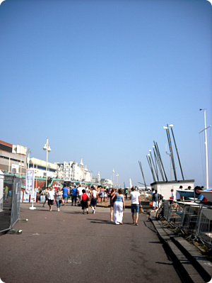
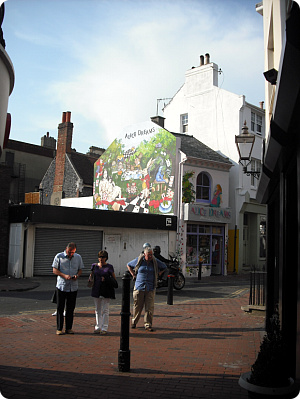
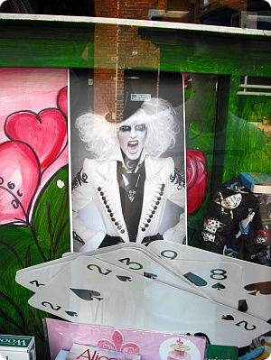
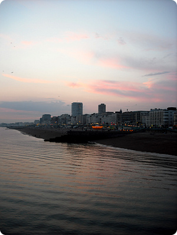

포풍의 한가운데;;;
해결해야 할일이 갑자기 몰려와서
마구 패닉광선 발사중;;;;
흑흑;; 한번에 하나밖에 못한다니까 ;ㅂ;
왜 항상 동시다발적으로 뭐가 생기는겨;; OTL
그와중에도 주말마다 놀기는 열씨미 놀고있습니다;;
4월 이스터겸 로얄웨딩겸 쉬는날이 많아서
얼쑤좋구나~ 하고 댕겨온 브라이튼
이날 너무 더웠더랬죠;;;
+
같이댕겨온 M군
출발전날 인터넷 서치로 브라이튼에 있는 한국레스토랑을 찾아왔다능;;
알고봤더니 전에 연이아가씨 한국돌아가기전 같이 갔던곳 ㅋㅋㅋㅋ
이번이 두번째 한국음식 도전이라
이것저것 조금씩 다양하게 먹어보라구 코스요리를 주문했었음
얘 심지어 육회/김치도 잘먹어 ㅋㅋㅋ 정체가뭐야 ㅋㅋㅋㅋ
날이 더워지고 해가길어지니
이상한의무감(?)에 열심히 돌아댕기고 있습니다^^;;;;;